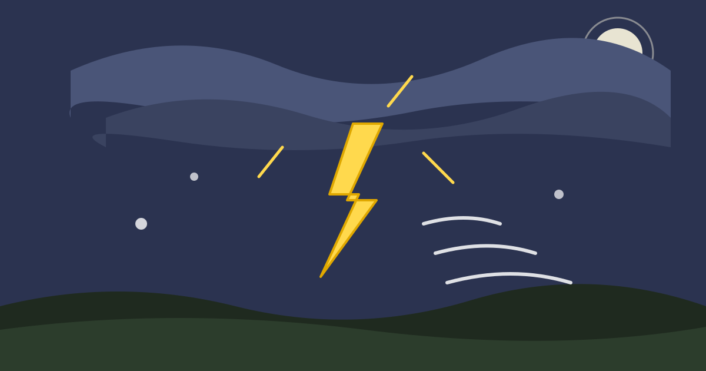

Why Do We See Lightning Before We Hear Thunder?

A storm cloud splits the sky with a jagged white flash. You flinch, and then you wait. One second, two seconds, three, and then the thunder rolls in, a deep rumble that seems to come from everywhere at once. The flash and the sound were born at exactly the same instant, in the same bolt of lightning, yet they arrive at very different times. The reason is one of the simplest facts in physics: light is enormously faster than sound.
Light travels at about 300,000 kilometres per second, fast enough to circle the Earth more than seven times in a second. Sound in air crawls at about 343 metres per second, roughly a kilometre every three seconds. Over the few kilometres to a storm, the light arrives in a fraction of a blink, while the sound needs several seconds. You see the lightning first not because it happened first, but because its messenger is faster.
Two Messengers, Very Different Speeds
Think of the flash and the thunder as two runners leaving the same starting line at the same moment, one in a racing car and one on foot. The light is the racing car: it covers the distance to your eyes in about one hundred-thousandth of a second for a storm three kilometres away, so for all practical purposes it arrives instantly. The sound is the runner on foot: the same three kilometres take it about nine seconds. The gap you notice between flash and thunder is simply the sound's travel time.
No storm on Earth is far enough away for you to notice any delay in the flash: even a bolt 30 kilometres away sends its light in a ten-thousandth of a second. The speed of sound, by contrast, is part of everyday experience: it is why you hear a distant hammer strike a fraction of a second after you see it land, and why an aircraft seems ahead of its own engine noise.
Counting the Gap Measures the Distance
Because sound travels at a steady speed, the delay between flash and thunder works as a rough distance gauge, and it is one people have used for centuries. Count the seconds from the moment you see the flash until you first hear the thunder, then divide by three to get the distance in kilometres, or divide by five to get it in miles. Three seconds means the bolt was about a kilometre away; nine seconds means about three kilometres; fifteen seconds means about five. The rule is approximate, since the speed of sound shifts slightly with air temperature, but it is good enough for judging whether a storm is approaching or moving away: shorter gaps mean it is coming closer, longer gaps mean it is leaving. If the gap is under about ten seconds, you should already be indoors: lightning can strike well beyond the rain, sometimes ten kilometres or more from the storm's centre.
What Lightning Actually Is
Inside a tall storm cloud, strong up-and-down currents throw ice crystals and softer pellets of ice, called graupel, against each other again and again. The collisions strip tiny electric charges from the particles: lighter crystals carry positive charge to the top of the cloud, heavier graupel carries negative charge to the bottom. The cloud becomes a giant battery, with a growing voltage difference between its base and the ground.
When that difference grows large enough, the air itself breaks down and stops acting as an insulator. A faint, branching channel of ionised air, called a stepped leader, zigzags downward from the cloud in a series of short jumps. As it nears the ground, upward streamers rise from trees, buildings, and the ground itself to meet it. The moment they connect, a complete path exists, and a huge current rushes up it: the return stroke, the brilliant flash you actually see. What looks like a single bolt is often several strokes using the same channel, one after another, which is why lightning sometimes appears to flicker.
Thunder Is the Sound of Air Exploding
That current is enormously hot: the air around a bolt is heated to around 30,000 degrees Celsius in a fraction of a second, several times hotter than the surface of the Sun. Air heated that fast expands violently, faster than sound, creating a shock wave that settles into an ordinary sound wave a little further out: the thunder you hear. Flash and thunder are not two events. The flash is the light from the hot channel, the thunder the sound of that same channel expanding, made together at the same instant. After that it is a race, and light wins by an enormous margin.
Why Thunder Rumbles Instead of Cracking
A nearby bolt gives a sharp crack, a distant one a long, low rumble. Both are the same sound, changed by distance and by the bolt's shape. A lightning channel is not a point but a jagged line several kilometres long, with branches. Sound from the nearest part reaches you first, from the farthest part later, stretching the noise into a rumble. High-pitched sounds also fade faster over distance, so after a few kilometres only the deep low notes remain. Hills, buildings, and clouds reflect the sound too, and the late reflections stretch the rumble further still.
Why You Sometimes See Lightning and Hear Nothing
On a warm summer night you may see flashes on the horizon with no thunder. This is often called heat lightning, though it is no special kind: ordinary lightning from a storm too far away for its thunder to reach you. Beyond roughly 25 kilometres, thunder has usually faded below hearing, absorbed and scattered by the air, while the light barely weakens and still arrives clearly. Sound can also be bent by layers of air at different temperatures: on a warm evening, waves travelling upward bend away from the ground and pass overhead, so the thunder travels through the sky above you but never reaches your ears.
Common Misconceptions
Lightning does strike the same place twice: tall buildings, towers, and trees are struck many times, and the Empire State Building is struck dozens of times in a typical year. It strikes the tallest, most conductive object in an area, and if that object stays the tallest, it will be struck again. Nor do a car's rubber tyres protect you: the metal shell can act as a Faraday cage, channelling current around the outside and into the ground, but the tyres play no part. And thunder itself cannot hurt you, it is only sound, but it is a warning: if you can hear it, lightning is close enough to be a risk, and most injuries happen before the heaviest rain or after it eases. The usual advice is to wait thirty minutes after the last thunder before going back outside.
Frequently Asked Questions
How far away is lightning if I count ten seconds?
About three kilometres, or about two miles. Divide the seconds by three for kilometres, or by five for miles. Ten seconds is close enough that you should be indoors.
Why does the flash sometimes seem to light up the whole sky?
Because the bolt is extremely bright and its light scatters off clouds, rain, and haze in all directions. A bolt hidden behind a cloud can still flood the whole sky with light, even when you cannot see the channel itself. This is sheet lightning: the cloud glows, but the bolt is inside or behind it.
Why does lightning look jagged?
The stepped leader does not travel in a straight line. It advances in short jumps, and each jump follows the path of least resistance through the air, which changes from moment to moment as the air is ionised. The result is the familiar crooked, branching shape, and each branch is a path the discharge explored on its way down.
Conclusion
Lightning and thunder are one event wearing two disguises: the bolt superheats a channel of air, which gives off both a flash and a shock wave at the same instant. Light reaches you immediately; sound takes its time, and that delay is the gap you count. The pause between flash and thunder is more than suspense. It is a measurement made with eyes, ears, and a little counting: the sound's travel time, telling you how far away the storm is, and whether it is coming closer.